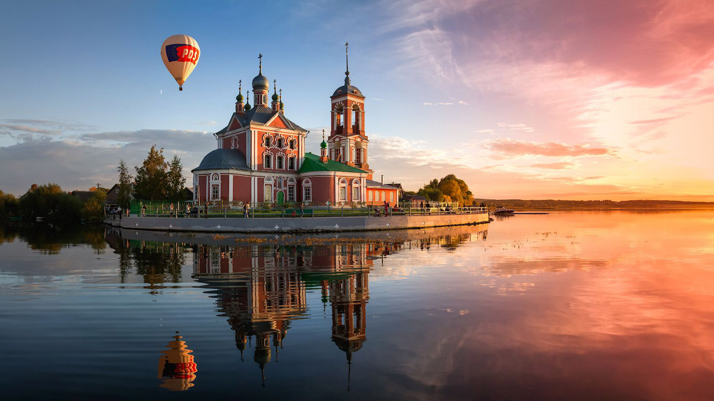
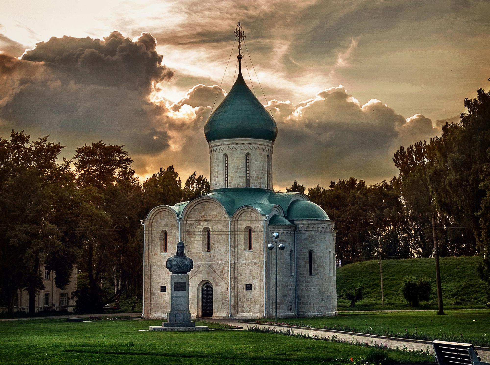
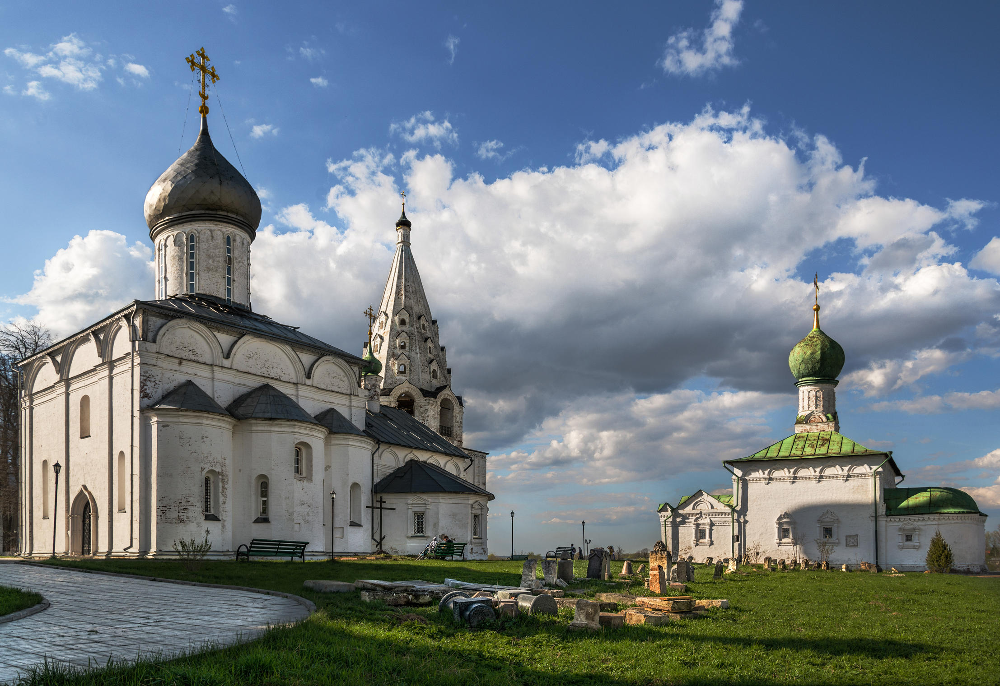
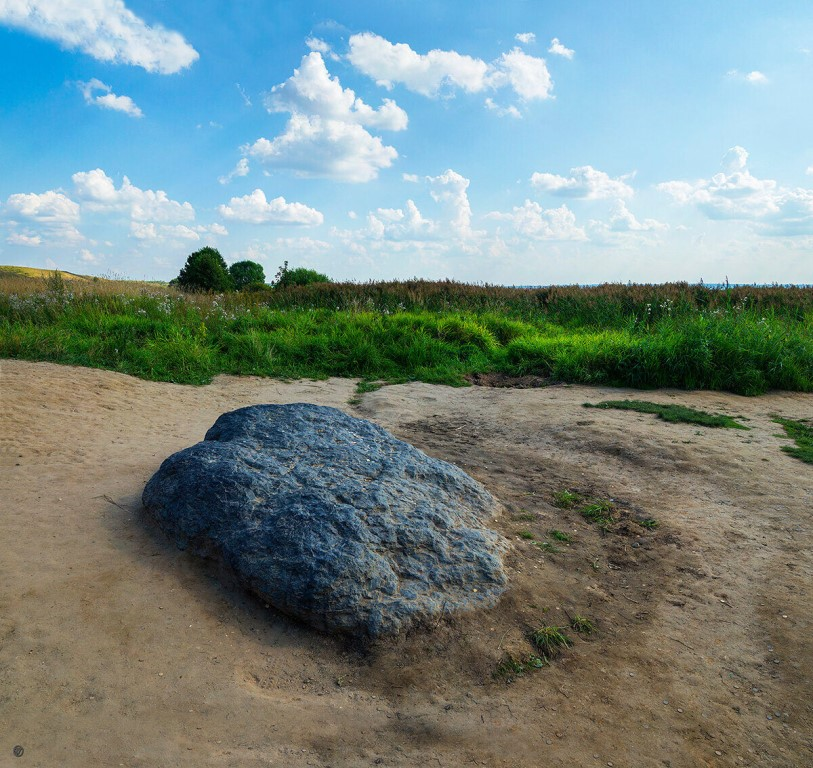

Переяславль-Залесский
Переславль-Залесский как будущую столицу Северо-Восточной Руси в середине XII века основал князь Юрий Долгорукий. На болотистой равнине он заложил огромный по тем временам город, больше которого были только Киев и Смоленск. Переславль-Залесский входит в туристический маршрут Золотого кольца России: здесь находятся несколько древних монастырей и церквей, подлинные ритуальные объекты языческой Руси и другие исторические памятники.

Спасо-Преображенский собор — единственный из белокаменных храмов Северо-Восточной Руси, дошедший до нас практически в полной сохранности. Собор заложил князь Юрий Долгорукий в 1152 году, а завершил строительство его сын — князь Андрей Боголюбский. Здесь в XIII веке крестили Александра Невского, сюда приезжали Даниил Московский, Иван III и Иван Грозный. После того как здание собора сильно пострадало от золотоордынского штурма, собор был восстановлен и заново освящен.

В начале XVI века монастырь основал духовник великого князя Василия III инок Даниил. К 1530-м годам в честь рождения княжеского наследника — будущего царя Ивана Грозного — в монастыре возвели Троицкий собор. Даниил стал крестным отцом Ивана Васильевича. Внутри собор украшен фресками известного мастера Гурия Никитина. На сегодняшний день Троицкий собор — второй по древности храм в Переславле-Залесском после Спасо-Преображенского собора.

На берегу Плещеева озера расположен легендарный Синий камень — часть древнего языческого святилища. Это подлинный ритуальный объект, сохранившийся до наших дней со времен языческой Руси. После дождя цвет камня меняется от серого к синему — благодаря этому явлению камень получил свое название. Еще несколько десятков лет назад высота Синь-камня достигала человеческого роста, теперь камень уходит под землю — сегодня его высота около полуметра. Современные туристы загадывают здесь желания — поверхность Синего камня покрыта монетами и цветами.
